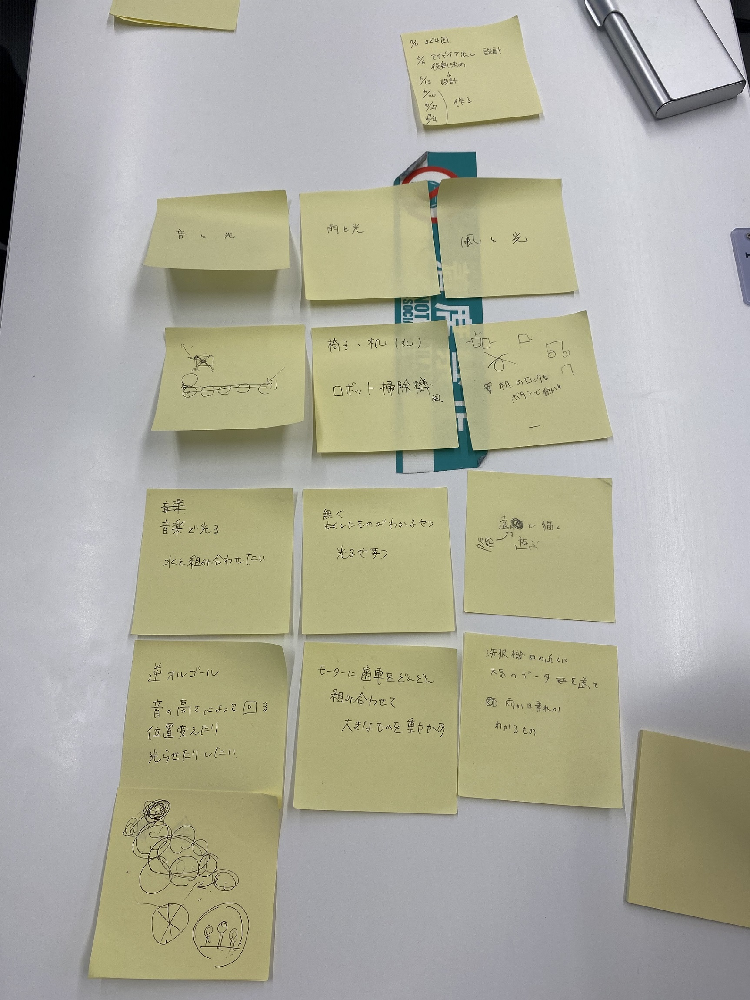

プロジェクトマネジメント
決まるまでの流れ
色々な案を出していく中で、「音を視覚化する」案に着目
↓
実際に、IOTを使った音を視覚化するものがどのような場面で活用されるのか考え案を出した。
実際に想定される場面として、聴覚障害を持つ方や老化で耳が聞こえにくくなってきた方に「音」というものを目に見える形で表現する手段として
また防犯として監視カメラの死角となってしまうような場所に設置し活用するというような意見が出た。
↓
音の視覚化に関して光を使ったものなどの案も出たが、すでに商品化されているものなどもあったため
もう少し違う方向性で考えることにした。
↓
そこで既存の商品の仕組みを反転させた仕掛けを使うのはどうかという案が出た。
そして具体的な案として、オルゴールを逆にする案が出た。
通常のオルゴールは音を出すために歯車を回すが、今回は歯車を回すために音を出すというような仕掛けを作ってみることにした。
「視覚化」するのであれば大きな物を作ったほうがわかりやすく伝わると考え、大きなものを作ることにした。
付箋まとめ
